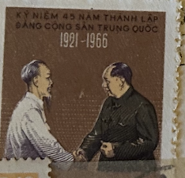
| SOURCE | TITLE| IMAGE MATCH | click to source page |
| Colnect | Stamp: Ho Chi Minh, Mao Tse-Tung (Vietnam(Chinese Communist Party, 45th anniv.) Mi:VN 447,Sn:VN 428,Yt:VN-N 505,Sg:VN N444 📮 | 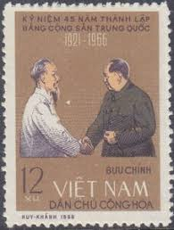 |
| Delcampe | Vietnam - VIETNAM USED STAMPS MAO | 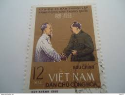 |
| 2dehands | ② Frankrijk 1993 - Yvert 2820 - Marianne du Bicentenaire (ST) — Postzegels | Europa | Frankrijk — 2dehands | 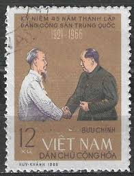 |
| eBay | Vietnam 1966 (446-447) Mao Zedong | eBay | 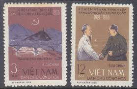 |
| OTOFUN | Funland] - Bộ sưu tập tem cổ | OTOFUN | CỘNG ĐỒNG OTO XE MÁY VIỆT NAM | 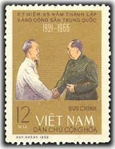 |
| eBay | Vietnam 427-428 Mao tse-tung & Ho Chi Minh, Mint NH, NGAI, 1966 Issue | eBay | 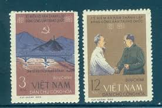 |
| eBay Australia | N.192 -Vietnam- 45th Anniv of Chinese Communist Party | eBay Australia | 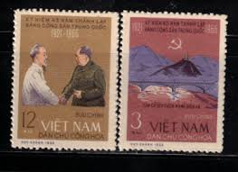 |
| eBay | Laos Celebrities Postal Stamps for sale | eBay | 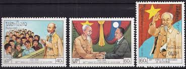 |
| lastdodo.com | Stamps from Vietnam - North Vietnam Stamp catalogue - LastDodo | 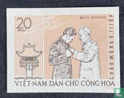 |
| Alamy | MOSCOW, RUSSIA - SEPTEMBER 28, 2020: Postage stamp printed in Vietnam shows G. Dimitrov at Leipzig Court, 1933, Dimitrov, George (Bulgarian statesman Stock Photo - Alamy | 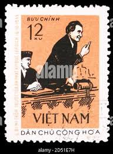 |
| Colnect | Stamp: Ho Chi Minh meets Kaysone Phomvihane (Laos(100th anniversary of Ho Chi Minh) Mi:LA 1208,Sn:LA 984,Yt:LA 975,Sg:LA 1194 📮 | 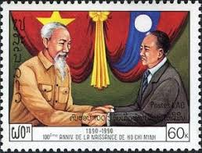 |
| eBay | F (Fine) Vietnamese Stamps for sale | eBay | 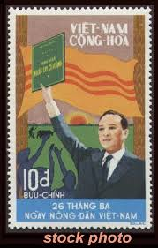 |
| Alamy | Old vietnam postage stamp hi-res stock photography and images - Page 14 - Alamy | 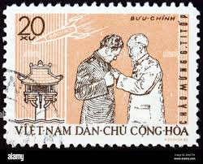 |
| Colnect | Stamp: Kliment Voroshilov (1881-1969) and Hồ Chí Minh (1890-1969) (Vietnam(The 40th Anniversary of the October Revolution) Mi:VN 64,Sn:VN 61,Yt:VN-N 129,Sg:VN N72 📮 | 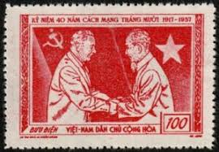 |
| eBay | VIETNAM SELECTIVE WORLD STAMPS MIX COLLECTION PHILATHLETIC -DANCHU CONGHOA 4PCS | eBay | 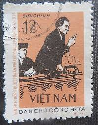 |
| Dreamstime.com | Kaysone Stock Photos - Free & Royalty-Free Stock Photos from Dreamstime | 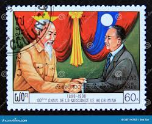 |
| eBay | Vietnam 1963 (264) Ho Chi Minh | eBay | 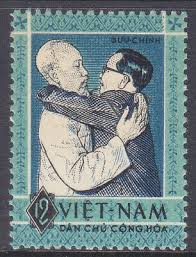 |
| eBay | Mint Tanzania Stamps Souvenir sheet (MNH) | eBay | 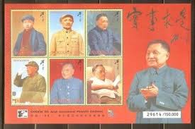 |
| eBay | VIETNAM 50th Anniversary of Ho Chi Minh's Last Testament MNH stamp | eBay | 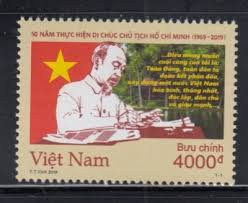 |
| eBay | Deng Xiaoping souvenir sheet 1996 The Gambia #1866 China International Stampex | eBay | 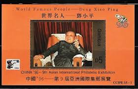 |
| eBay | Historical Events Vietnamese Stamps for sale | eBay | 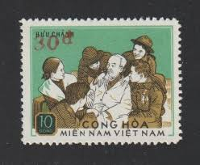 |
| eBay UK | Vietnam Sticker Labels 2023 Vintage Stamp Full Sheet Ho Chi Minh | eBay UK | 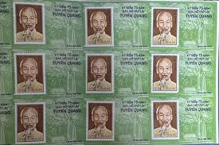 |
| eBay | Vietnam Communist Leaders Lenin and Ho Mi Ming stamp 1977 A-2 | eBay | 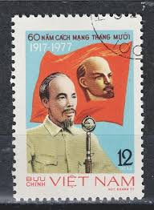 |
| Maps on Stamps | Maps on Stamps : Vietnam (North Vietnam) | A Database of Cartophilately | 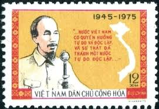 |
| Karma Kundali | HO CHI MINH | 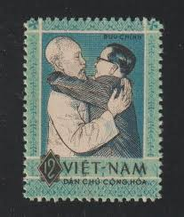 |
| Shutterstock | Laos Circa 1990 Stamp Printed Laos Stock Photo 1496382491 | Shutterstock | 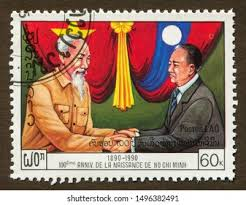 |
| eBay | 1984 Vietnam Stamps Lenin Set Collection Scott # 1452 - 1455 MNH | eBay | 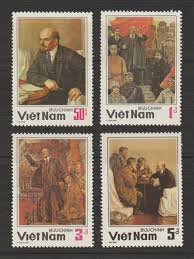 |
| eBay | ✔️ NORTH VIETNAM 1957 - HO CHI MINH & VOROSHILOV & EMBLEMS - SC. 61 (o) | eBay | 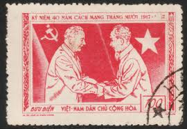 |
| Stamp Community Forum | Vietnam Stamps And Philatelic Items - Stamp Community Forum | 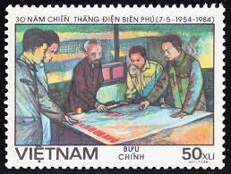 |
| eBay | Vietnam Sticker Labels 2023 Vintage Stamp Full Sheet Ho Chi Minh | eBay | 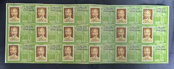 |
| lastdodo.com | Ho Chi Minh [1890-1969] Stamp catalogue - LastDodo | 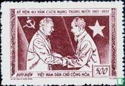 |
| eBay | 1980 Vietnam Stamps Block 4 Nati. Emblems Scott # 1086-1089 MNH | eBay | 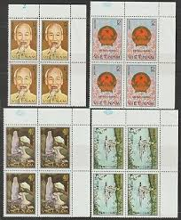 |
| Bob Shop | Vietnam - North Vietnam lot of 37 1957-1962 mostly used stamps was listed for 150.00 on 13 Sep at 09:31 by Cape Town Coins CBD in Cape Town (ID:624004741) | 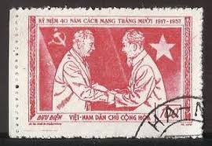 |
| eBay | VIETNAM NORTH 1956, Mi 53 PAIR, ERROR: OPT DOUBLE, ONE INVERTED (TOP STAMP), MNH | eBay | 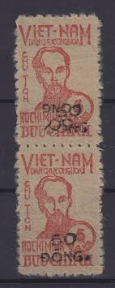 |
| eBay | Vietnam 2007 (3458) Truong Chinh | eBay |  |
| srilankastamps.lk | Sri Lanka Stamps For Sale - Kings Counsel H. Sri Nissanka, Ceylon Fertilizer Company Limited, The Institute of Automobile Engineers, International Biodiversity Day, World Conference on Youth | 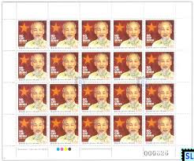 |
| eBay | s41097 VIETNAM 1960 MNH** Ho Chi Minh 3v Y&T 196/198 | eBay | 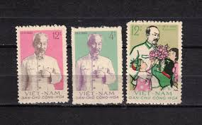 |
| Shutterstock | Vietnam Circa 1975 Stamp Printed Vietnam Stock Photo 59870725 | Shutterstock | 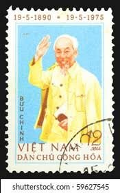 |
| Shutterstock | 4+ Hundred Ho Chi Minh Stamps Royalty-Free Images, Stock Photos & Pictures | Shutterstock | 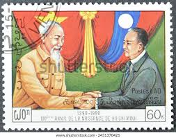 |
| eBay | North Vietnam #1171 unused no gum e207 10533 | eBay | 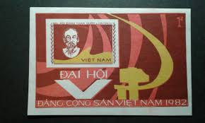 |
| eBay | Vietnam 2019 Imperforated (1114) Ho Chi Minh | eBay | 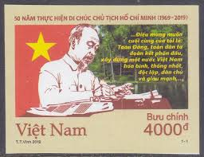 |
| Interesting North Vietnamese propaganda stamp just discovered in a new batch of stamps I received. | 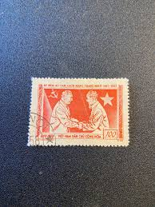 | |
| eBay | 100th Birthday of Ho Chi Minh -BLOCK OF 4- (MNH) | eBay | 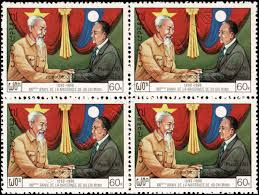 |
| original-briefmarken.de | 100th Birthday of Ho Chi Minh | 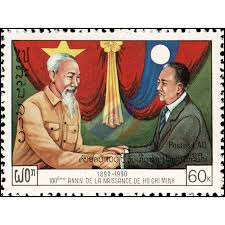 |
| Colnect | Stamp: Hồ Chí Minh and Kaysone Phomvihane (Laos(Year of Vietnam-Laos Solidarity and Friendship) Mi:LA 2226,Sn:LA 1860,Yt:LA 1821,Sg:LA 2176 📮 | 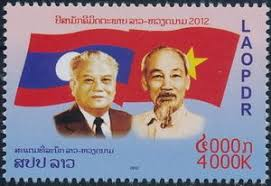 |
| eBay | 1962 North Vietnam Stamps Visit by Gherman Titov Scott # 211-213 Imperf. MNH | eBay | 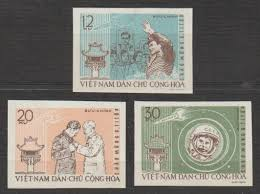 |
| eBay | VIETNAM EARLY ISSUES , SEE!! | eBay | 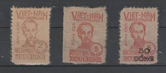 |
| eBay | 1960 North Vietnam Stamps National Day, 15th Anniv. Scott # 132-133 Cto NH | eBay | 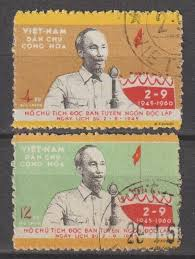 |
| eBay | Soviet postage stamps | eBay | 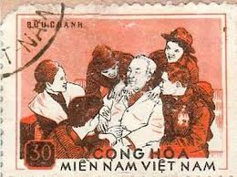 |
| Society of Indo-China Philatelists | Vietcong Album color | 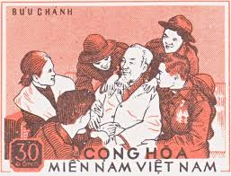 |
| Shutterstock | 13+ Thousand Communist Art Royalty-Free Images, Stock Photos & Pictures | Shutterstock | |
| eBay | Vietnam, DR #517, 621, 628 used | eBay | |
| Stamp Community Forum | Vietnam Postal History During The Vietnam War - Page 4 - Stamp Community Forum | |
| Stamps.org | REGIME CHANGE IN VIETNAM: | |
| Alamy | 1980 phone hi-res stock photography and images - Alamy | |
| eBay | 65414] South Vietnam 1967 Patriots MNH | eBay | |
| eBay | G 5279 VIETNAM 1960 SOUVENIR SHEETS MI BL 2 + 3 + MI 131 MNH NGAI | eBay | |
| Stamp Community Forum | Vietnam Postal History During The Vietnam War - Page 4 - Stamp Community Forum | |
| lastdodo.com | Ngo-Dinh-Diem [1901-1963] Stamp catalogue - LastDodo |